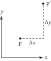
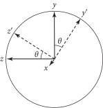
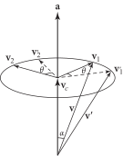
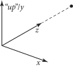

3.9 变换（Transformations）
一般来说，变换（transformation） \( \mathbf{T} \) 是从点到点以及从向量到向量的映射：
\[
p'=\mathbf{T}(p) \quad \mathbf{v}'=\mathbf{T}(\mathbf{v})
\]
变换 \( \mathbf{T} \) 可以是任意的程序（arbitrary procedure）。然而，在本章中，我们将考虑所有可能变换的子集。特别地，它们将是
- 线性（Linear）： 如果 \( \mathbf{T} \) 是一个任意线性变换，\( s \) 是一个任意标量，那么 \( \mathbf{T}(s\mathbf{v}) = s\mathbf{T}(\mathbf{v}) \) 且 \( \mathbf{T}(\mathbf{v}_1+\mathbf{v}_2) = \mathbf{T}(\mathbf{v}_1) + \mathbf{T}(\mathbf{v}_2) \) 。这两个性质可以大大简化对变换的推理。
- 连续（Continuous）： 粗略地说，\( \mathbf{T} \) 将 \( \text{p} \) 和 \( \mathbf{v} \) 周围的邻域（neighborhoods）映射到 \( \text{p}' \) 和 \( \mathbf{v}' \) 周围的邻域。
- 一对一且可逆（One-to-one and invertible）： 对于每个 \( \text{p} \) ，\( \mathbf{T} \) 将 \( \text{p} \) 映射到一个唯一的 \( \text{p}' \) 。此外，存在一个逆变换 \( \mathbf{T}^{-1} \) ，将 \( \text{p}' \) 映射回 \( \text{p} \) 。
我们通常希望将相对于一个坐标系定义的点、向量或法线，找到其相对于另一个坐标系的坐标值。利用线性代数的基本性质，可以证明一个 \( 4\times4 \) 矩阵可以表示点或向量从一个坐标系到另一个坐标系的线性变换。此外，这样的 \( 4\times4 \) 矩阵足以表示固定坐标系内所有点和向量的线性变换，例如空间中的平移或围绕某一点的旋转。因此，矩阵可以有两种不同（且不兼容！）的解释方式：
- 坐标系内的变换（Transformation within the frame）： 给定一个点，矩阵可以表示如何在同一坐标系内计算原始点经过变换后的 新 点（例如，通过在某个方向上平移它）。
- 从一个坐标系到另一个坐标系的变换（Transformation from one frame to another）： 矩阵可以根据原始坐标系中的坐标来表示新坐标系中一个点或向量的坐标。
在 pbrt 中，大多数变换的用途是将点从一个坐标系转换到另一个坐标系。
一般来说，变换可以让我们在最方便的坐标空间中工作。例如，我们可以编写例程来定义一个虚拟摄像机，假设摄像机位于原点，朝着 \( z \) 轴方向看，且让 \( y \) 轴指向上方，\( x \) 轴指向右侧。这些假设大大简化了摄像机的实现。为了将摄像机放置在场景中的任意点并朝向任意方向，我们构建一个变换，将场景坐标系中的点映射到摄像机的坐标系中。（有关 pbrt 中摄像机坐标空间的更多信息，请参见第 5.1.1 节。）
3.9.1 齐次坐标（Homogeneous Coordinates）
给定一个由 \( (\text{p}_\text{o},\mathbf{v_1},\mathbf{v_2},\mathbf{v_3}) \) 定义的框架，有着相同 \( (x,y,z) \) 坐标的点 \( (\text{p}_x,\text{p}_y,\text{p}_z) \) 和向量 \( (\mathbf{v}_x,\mathbf{v}_y,\mathbf{v}_z) \) 在表示上存在歧义（ambiguity）。利用本章开头介绍的点和向量的表示，我们可以将点写为内积 \( [s_1\ s_2\ s_3\ 1][\mathbf{v_1}\ \mathbf{v_2}\ \mathbf{v_3}\ \text{p}_\text{o}]^T \) ，将向量写为内积 \( [s'_1\ s'_2\ s'_3\ 0][\mathbf{v_1}\ \mathbf{v_2}\ \mathbf{v_3}\ \text{p}_\text{o}]^T \) 。这些由三个 \( s_i \) 值和一个 0 或 1 组成的四维向量称为点和向量的 齐次（homogeneous ） 表示。齐次表示的第四个坐标有时称为 权重（weight）。对于一个点，其值可以是任何非零的标量：齐次点 \( [1,3,-2,1] \) 和 \( [-2,-6,4,-2] \) 描述相同的笛卡尔点 \( (1,3,-2) \) 。将齐次点转换为普通点需要将前三个分量除以权重：
\[
(x,y,z,w) \rightarrow \left( \frac{x}{w},\frac{y}{w},\frac{z}{w} \right)
\]
我们将利用这些事实来观察变换矩阵如何描述一个坐标系中的点和向量映射到另一个坐标系。考虑一个描述从一个坐标系到另一个坐标系变换的矩阵 \( \mathbf{M} \) ：
\[ \mathbf{M} = \left(\begin{matrix} {m_{0,0}} & {m_{0,1}} & {m_{0,2}} & {m_{0,3}} \\ {m_{1,0}} & {m_{1,1}} & {m_{1,2}} & {m_{1,3}} \\ {m_{2,0}} & {m_{2,1}} & {m_{2,2}} & {m_{2,3}} \\ {m_{3,0}} & {m_{3,1}} & {m_{3,2}} & {m_{3,3}} \\ \end{matrix}\right) \]
（在本书中，我们将矩阵元素索引从零开始定义，以便方程和源代码能够更直接地对应。）然后，如果将由 \( \mathbf{M} \) 表示的变换应用于 \( x \) 轴向量 \( (1,0,0) \) ，我们得到
\[
\mathbf{Mx} = \mathbf{M}[1\ 0\ 0\ 0]^T = [m_{0,0}\ m_{1,0}\ m_{2,0}\ m_{3,0}]^T
\]
因此，直接读取矩阵的列表明了基向量和当前坐标系的原点是如何通过矩阵进行变换的：
\[ \begin {align} \mathbf{My} &= [m_{0,1}\ m_{1,1}\ m_{2,1}\ m_{3,1}]^T \\ \mathbf{Mz} &= [m_{0,2}\ m_{1,2}\ m_{2,2}\ m_{3,2}]^T \\ \mathbf{M}\text{p} &= [m_{0,3}\ m_{1,3}\ m_{2,3}\ m_{3,3}]^T \end {align} \]
一般来说，通过描述基（basis）的变换方式，我们可以知道任何以该基表示的点或向量是如何变换的。因为坐标系中的点和向量是以坐标系的框架表示的，直接对它们应用变换，等同于对坐标系的基应用变换并在变换后的基中找到它们的坐标。
我们在代码中不会显式使用齐次坐标；在 pbrt 中没有 HomogeneousPoint 类。然而，下一节中的各种变换例程将隐式地将点、向量和法线转换为齐次形式，变换齐次点，然后在返回结果之前将其转换回去。这将齐次坐标的细节隔离在一个地方（即变换的实现）。
3.9.2 变换类定义（Transform Class Definition）
Transform 类表示一个 \( 4\times4 \) 变换。它的实现位于文件 util/transform.h 和 util/transform.cpp 中。
/** Transform 定义 */
class Transform {
public:
/** Transform 公有方法 */
private:
/** Transform 私有成员 */
};
变换矩阵由矩阵元素 m 表示，该矩阵由 SquareMatrix<4> 对象表示。（ SquareMatrix 类在 B.2.12 节中定义。）矩阵 m 以 行优先（row-major） 形式存储，因此元素 m[i][j] 对应于 \( m_{i,j} \) ，其中 \( i \) 是行号，\( j \) 是列号。为了方便，Transform 还在其 Transform::mInv 成员变量中存储了 m 的逆；出于 pbrt 的需求，能够方便地获取逆比需要时再反复计算更好。
/** Transform 私有成员 */
SquareMatrix<4> m, mInv;
这种变换的表示方式相当吃内存：假设一个 Float 值需要 4 字节的存储，那么一个 Transform 就需要 128 字节的存储。轻易使用这种方法可能会造成资源浪费；如果一个场景有数百万个形状，但只有几千个唯一的变换，那么就没有必要重复存储相同的矩阵。因此，pbrt 中的 Shape 存储一个指向 Transform 的指针，而在 C.2.3 节中定义的场景规范代码使用一个包含多个 Transform 的 InternCache 来确保所有共享相同变换的形状中的指针指向内存中该变换的单一实例。
3.9.3 基本运算（Basic Operations）
当创建一个新的 Transform 时，它默认是 恒等变换 / 单位变换（identity transformation） ——将每个点和每个向量映射到其自身的变换。该变换由 单位矩阵（identity matrix） 表示：
\[ \mathbf{I} = \left( \begin{matrix} {1} & {0} & {0} & {0} \\ {0} & {1} & {0} & {0} \\ {0} & {0} & {1} & {0} \\ {0} & {0} & {0} & {1} \\ \end{matrix} \right) \]
这里的实现依赖于默认的 SquareMatrix 构造函数来将 m 和 mInv 填充为单位矩阵。
/** Transform 公有方法 */
Transform() = default;
Transform 也可以通过给定的矩阵来创建。在这种情况下，矩阵必须被显式地反转。
/** Transform 公有方法 */
Transform(const SquareMatrix<4> &m) : m(m) {
pstd::optional<SquareMatrix<4>> inv = Inverse(m);
if (inv)
mInv = *inv;
else {
/** 用非数值（NaN）初始化 mInv */
}
}
如果调用者提供的矩阵是退化的（degenerate）并且无法逆转，则 mInv 将被初始化为浮点非数字（floating-point not-a-number）值，这会影响涉及它们的计算：使用非数值进行的算术运算总是会得到非数值。通过这种方式，提供退化矩阵 m 的调用者仍然可以使用 Transform ，只要不调用访问 mInv 的方法。
/** 用非数值（NaN）初始化 mInv */
Float NaN = std::numeric_limits<Float>::has_signaling_NaN
? std::numeric_limits<Float>::signaling_NaN()
: std::numeric_limits<Float>::quiet_NaN();
for (int i = 0; i < 4; ++i)
for (int j = 0; j < 4; ++j)
mInv[i][j] = NaN;
还有一个构造函数允许使用常规的二维数组来指定矩阵的元素。
/** Transform 公有方法 */
Transform(const Float mat[4][4]) : Transform(SquareMatrix<4>(mat)) {}
最常用的构造函数接受一个变换矩阵的引用以及一个显式提供的逆矩阵。这比在构造函数中计算逆矩阵的方式更为优越，因为许多几何变换具有简单的逆矩阵，我们可以避免计算一般的 \( 4\times4 \) 矩阵逆时的开销和潜在的数值精度损失。当然，这就要求调用者必须确保提供的逆矩阵是正确的。
/** Transform 公有方法 */
Transform(const SquareMatrix<4> &m, const SquareMatrix<4> &mInv)
: m(m), mInv(mInv) {}
矩阵及其逆矩阵都可供需要直接访问它们的调用者使用。
/** Transform 公有方法 */
const SquareMatrix<4> &GetMatrix() const { return m; }
const SquareMatrix<4> &GetInverseMatrix() const { return mInv; }
表示一个 Transform 的逆变换的 Transform 可以通过简单地交换 mInv 和 m 的值来返回。
/** Transform 内联函数 */
Transform Inverse(const Transform &t) {
return Transform(t.GetInverseMatrix(), t.GetMatrix());
}
转置变换中的两个矩阵以计算出新的变换也很有用。
/** Transform 内联函数 */
Transform Transpose(const Transform &t) {
return Transform(Transpose(t.GetMatrix()),
Transpose(t.GetInverseMatrix()));
}
Transform 类还提供了相等和不相等测试方法，以及一个用于检查变换是否为恒等变换的 IsIdentity() 方法。
/** Transform 公有方法 */
bool operator==(const Transform &t) const { return t.m == m; }
bool operator!=(const Transform &t) const { return t.m != m; }
bool IsIdentity() const { return m.IsIdentity(); }
3.9.4 平移（Translations）
平移变换（translation transformation） \( \mathbf{T}(\Delta x,\Delta y, \Delta z) \) 是最简单的变换之一。当应用于一个点 \( \text{p} \) 时，它将 \( \text{p} \) 的坐标平移 \( \Delta x \) 、 \( \Delta y \) 和 \( \Delta z \) ，如图 3.25 所示。例如，\( \mathbf{T}(2,2,1)(x,y,z) = (x+2,y+2,z+1) \) 。
图 3.25：二维中的平移。 将偏移量 \( \Delta x \) 和 \( \Delta y \) 添加到点的坐标中，相应地改变其在空间中的位置。
平移具有一些基本特性：
\[ \begin{align} \mathbf{T}(0,0,0) &= \mathbf{I} \\ \mathbf{T}(x_1,y_1,z_1)\mathbf{T}(x_2,y_2,z_2) &= \mathbf{T}(x_1+x_2,y_1+y_2,z_1+z_2) \\ \mathbf{T}(x_1,y_1,z_1)\mathbf{T}(x_2,y_2,z_2) &= \mathbf{T}(x_2,y_2,z_2)\mathbf{T}(x_1,y_1,z_1) \\ \mathbf{T}^{-1}(x,y,z) &= \mathbf{T}(-x,-y,-z) \end{align} \]
平移仅影响点，保持向量不变。以矩阵形式，平移变换为
\[
\mathbf{T}(\Delta x,\Delta y,\Delta z) = \left(
\begin{matrix}
{1}&{0}&{0}&{\Delta x} \\
{0}&{1}&{0}&{\Delta y} \\
{0}&{0}&{1}&{\Delta z} \\
{0}&{0}&{0}&{1} \\
\end{matrix}
\right)
\]
当我们考虑一个变换矩阵作用于一个点时，就会发现齐次坐标的价值。考虑 \( \mathbf{T}(\Delta x,\Delta y,\Delta z) \) 的矩阵与的点 \( \text{p} \) 的齐次坐标 \( [x\ y\ z\ 1]^T \) 的乘积：
\[
\left(
\begin{matrix}
{1}&{0}&{0}&{\Delta x} \\
{0}&{1}&{0}&{\Delta y} \\
{0}&{0}&{1}&{\Delta z} \\
{0}&{0}&{0}&{1} \\
\end{matrix}
\right)\left(
\begin{matrix}
{x} \\
{y} \\
{z} \\
{1} \\
\end{matrix}
\right)=\left(
\begin{matrix}
{x + \Delta x} \\
{y + \Delta y} \\
{z + \Delta z} \\
{1} \\
\end{matrix}
\right)
\]
如预期，我们计算出了一个新点，其坐标偏移了 \( (\Delta x,\Delta y,\Delta z) \) 。然而，如果我们将 \( \mathbf{T} \) 应用于向量 \( \mathbf{v} \) ，我们得到
\[
\left(
\begin{matrix}
{1}&{0}&{0}&{\Delta x} \\
{0}&{1}&{0}&{\Delta y} \\
{0}&{0}&{1}&{\Delta z} \\
{0}&{0}&{0}&{1} \\
\end{matrix}
\right)\left(
\begin{matrix}
{x} \\
{y} \\
{z} \\
{0} \\
\end{matrix}
\right)=\left(
\begin{matrix}
{x} \\
{y} \\
{z} \\
{0} \\
\end{matrix}
\right)
\]
结果是相同的向量 \( \mathbf{v} \) 。这是有道理的，因为向量表示方向，因此平移不会改变它们。
Translate() 函数返回一个 Transform ，表示给定的平移——这是平移矩阵方程的直接应用。平移的逆很容易计算，因此也提供给 Transform 构造函数。
/** Transform 函数定义 */
Transform Translate(Vector3f delta) {
SquareMatrix<4> m(1, 0, 0, delta.x,
0, 1, 0, delta.y,
0, 0, 1, delta.z,
0, 0, 0, 1);
SquareMatrix<4> minv(1, 0, 0, -delta.x,
0, 1, 0, -delta.y,
0, 0, 1, -delta.z,
0, 0, 0, 1);
return Transform(m, minv);
}
3.9.5 缩放（Scaling）
另一个基本变换是 缩放变换（scale transformation） \( \mathbf{S}(s_x,s_y,s_z) \) 。它的作用是将一个点或向量的分量 \( x \) 、 \( y \) 和 \( z \) 乘以缩放因子：\( \mathbf{S}(2,2,1)(x,y,z) = (2x,2y,z) \) 。它具有以下基本属性：
\[
\begin{align}
\mathbf{S}(1,1,1) &= \mathbf{I} \\
\mathbf{S}(x_1,y_1,z_1)\mathbf{S}(x_2,y_2,z_2) &= \mathbf{S}(x_1 x_2,y_1 y_2, z_1 z_2) \\
\mathbf{S}(x_1,y_1,z_1)\mathbf{S}(x_2,y_2,z_2) &= \mathbf{S}(x_2,y_2,z_2)\mathbf{S}(x_1,y_1,z_1) \\
\mathbf{S}^{-1}(x,y,z) &= \mathbf{S}\left( \frac{1}{x},\frac{1}{y},\frac{1}{z} \right)
\end{align}
\]
我们可以区分 均匀缩放（uniform scaling），其中所有三个缩放因子具有相同的值，以及 非均匀缩放（nonuniform scaling），其中它们可能具有不同的值。一般的缩放矩阵是
\[
\mathbf{S}(x,y,z) = \left(
\begin{matrix}
{x}&{0}&{0}&{0} \\
{0}&{y}&{0}&{0} \\
{0}&{0}&{z}&{0} \\
{0}&{0}&{0}&{1} \\
\end{matrix}
\right)
\]
/** Transform 函数定义 */
Transform Scale(Float x, Float y, Float z) {
SquareMatrix<4> m(x, 0, 0, 0,
0, y, 0, 0,
0, 0, z, 0,
0, 0, 0, 1);
SquareMatrix<4> minv(1 / x, 0, 0, 0,
0, 1 / y, 0, 0,
0, 0, 1 / z, 0,
0, 0, 0, 1);
return Transform(m, minv);
}
测试一个变换是否包含缩放项是很有用的；一种简单的做法是变换三个坐标轴，看看它们的长度中是否有明显不等于 1 的。
/** Transform 公有方法 */
bool HasScale(Float tolerance = 1e-3f) const {
Float la2 = LengthSquared((*this)(Vector3f(1, 0, 0)));
Float lb2 = LengthSquared((*this)(Vector3f(0, 1, 0)));
Float lc2 = LengthSquared((*this)(Vector3f(0, 0, 1)));
return (std::abs(la2 - 1) > tolerance ||
std::abs(lb2 - 1) > tolerance ||
std::abs(lc2 - 1) > tolerance);
}
3.9.6 \( x \)、\( y \) 和 \( z \) 轴旋转（\( x \), \( y \), and \( z \) Axis Rotations）
另一种有用的变换类型是 旋转变换（rotation transformation） \( \mathbf{R} \)。一般来说，我们可以从原点定义一个任意方向的轴，然后围绕该轴旋转一个给定的角度。这种类型中最常见的是围绕 \( x \)、 \( y \) 和 \( z \) 坐标轴的旋转。我们将这些旋转写作 \( \mathbf{R}_x(\theta) \) 、 \( \mathbf{R}_y(\theta) \) 等。围绕任意轴 \( (x,y,z) \) 的旋转用 \( \mathbf{R}_{(x,y,z)}(\theta) \) 表示。
旋转也具有一些基本属性：
\[ \begin{align} \mathbf{R}_a(0) &= \mathbf{I} \\ \mathbf{R}_a(\theta_1)\mathbf{R}_a(\theta_2) &= \mathbf{R}_a(\theta_1+\theta_2) \\ \mathbf{R}_a(\theta_1)\mathbf{R}_a(\theta_2) &= \mathbf{R}_a(\theta_2)\mathbf{R}_a(\theta_1) \\ \mathbf{R}_a^{-1}(\theta) &= \mathbf{R}_a(-\theta) = \mathbf{R}_a^T(\theta) \end{align} \]
其中 \( \mathbf{R}^T \) 是 \( \mathbf{R} \) 的矩阵转置。最后这个性质，即 \( \mathbf{R} \) 的逆等于其转置，是因为 \( \mathbf{R} \) 是一个 正交矩阵（orthogonal matrix）；它的前三列（或行）都是归一化的，并且彼此正交。幸运的是，转置比计算一个完整的矩阵的逆要简单得多。
对于左手坐标系，围绕 \( x \) 轴的顺时针（clockwise）旋转矩阵为
\[ \mathbf{R}_x(\theta) = \left( \begin{matrix} {1} & {0} & {0} & {0} \\ {0} & {\cos\theta} & {-\sin\theta} & {0} \\ {0} & {\sin\theta} & {\cos\theta} & {0} \\ {0} & {0} & {0} & {1} \\ \end{matrix} \right) \]
图 3.26 解释了该矩阵是如何运作的。
图 3.26： 围绕 \( x \) 轴顺时针旋转角度 \( \theta \) ，\( x \) 坐标保持不变。 \( y \) 和 \( z \) 轴映射到虚线所示的向量；\( y \) 和 \( z \) 坐标相应移动。
很容易看出，该矩阵保持 \( x \) 轴不变：
\[
\mathbf{R}_x(\theta)[1\ 0\ 0\ 0]^T = [1\ 0\ 0\ 0]^T
\]
它将 \( y \) 轴 \( (0,1,0) \) 映射到 \( (0,\cos\theta,\sin\theta) \) ，将 \( z \) 轴映射到 \( (0,-\sin\theta,\cos\theta) \) 。 \( y \) 和 \( z \) 轴仍保留在同一平面内，与 \( x \) 轴垂直，但被旋转了给定的角度。空间中的任意一点也类似地通过此变换围绕 \( x \) 轴旋转，同时保留在与原来相同的 \( yz \) 平面内。
RotateX() 函数的实现非常直接。
/** Transform 函数定义 */
Transform RotateX(Float theta) {
Float sinTheta = std::sin(Radians(theta));
Float cosTheta = std::cos(Radians(theta));
SquareMatrix<4> m(1, 0, 0, 0,
0, cosTheta, -sinTheta, 0,
0, sinTheta, cosTheta, 0,
0, 0, 0, 1);
return Transform(m, Transpose(m));
}
类似地，对于围绕 \( y \) 和 \( z \) 轴的顺时针旋转，我们有
\[
\mathbf{R}_y(\theta) = \left(
\begin{matrix}
{\cos\theta} & {0} & {\sin\theta} & {0} \\
{0} & {1} & {0} & {0} \\
{-\sin\theta} & {0} & {\cos\theta} & {0} \\
{0} & {0} & {0} & {1} \\
\end{matrix}
\right) \qquad \mathbf{R}_z(\theta) = \left(
\begin{matrix}
{\cos\theta} & {-\sin\theta} & {0} & {0} \\
{\sin\theta} & {\cos\theta} & {0} & {0} \\
{0} & {0} & {1} & {0} \\
{0} & {0} & {0} & {1} \\
\end{matrix}
\right)
\]
RotateY() 和 RotateZ() 的实现同矩阵，不在此处包含。
3.9.7 绕任意轴的旋转（Rotation around an Arbitrary Axis）
我们还提供了一个例程，用于计算绕任意轴旋转的变换。该矩阵的常见推导基于计算将给定轴映射到固定轴（例如 \( z \) 轴）的旋转，在那里执行旋转，然后将固定轴旋转回原始轴。可以使用向量代数构建更优雅的推导。
考虑一个归一化的方向向量 \( \mathbf{a} \) ，作为用于旋转角度 \( \theta \) 的轴，和一个要被旋转的向量 \( \mathbf{v} \)（图 3.27）。
图 3.27： 一个向量 \( \mathbf{v} \) 可以围绕任意轴 \( \mathbf{a} \) 旋转，通过在垂直于轴且经过 \( \mathbf{v} \) 的终点的平面中构建一个坐标系 \( (\text{p},\mathbf{v_1},\mathbf{v_2}) \) ，并围绕 \( \text{p} \) 旋转向量 \( \mathbf{v_1} \) 和 \( \mathbf{v_2} \) 。将此旋转应用于坐标系的轴 \( (1,0,0) \)、 \( (0,1,0) \) 和 \( (0,0,1) \)，得到该旋转的通用旋转矩阵。
首先，我们可以计算沿着轴 \( \mathbf{a} \) 的向量 \( \mathbf{v_c} \) ，该向量位于通过 \( \mathbf{v} \) 的终点的平面内，并且与 \( \mathbf{a} \) 平行。假设 \( \mathbf{v} \) 和 \( \mathbf{a} \) 形成一个夹角 \( \alpha \) ，我们有
\[
\mathbf{v_c} = \mathbf{a} \| \mathbf{v} \| \cos\alpha = \mathbf{a}(\mathbf{v}\cdot\mathbf{a})
\]
我们现在在这个平面中计算一对基向量 \( \mathbf{v_1} \) 和 \( \mathbf{v_2} \) 。显然，其中一个是
\[
\mathbf{v_1} = \mathbf{v} - \mathbf{v_c}
\]
另一个可以通过叉积计算得到
\[ \mathbf{v_2} = (\mathbf{v_1} \times \mathbf{a}) \]
因为 \( \mathbf{a} \) 是归一化的，\( \mathbf{v_1} \) 和 \( \mathbf{v_2} \) 具有相同的长度，等于 \( \mathbf{v} \) 和 \( \mathbf{v_c} \) 之间的向量的长度。现在要计算在旋转平面内围绕 \( \mathbf{v_c} \) 旋转角度 \( \theta \) 的旋转，之前的旋转公式给我们提供了
\[ \mathbf{v}' = \mathbf{v_c} + \mathbf{v_1}\cos\theta + \mathbf{v_2}\sin\theta \]
要将其转换为旋转矩阵，我们将此公式应用于基向量 \( (1,0,0) \)、 \( (0,1,0) \) 和 \( (0,0,1) \)，以获得矩阵行的值。所有这些的结果封装在以下函数中。与其他旋转矩阵一样，逆矩阵等于转置矩阵。
因为某些 Rotate() 函数的调用者已经持有 \( \sin\theta \) 和 \( \cos\theta \)，pbrt 提供了一个可以直接使用这些值的函数变体。
/** Transform 内联函数 */
Transform Rotate(Float sinTheta, Float cosTheta, Vector3f axis) {
Vector3f a = Normalize(axis);
SquareMatrix<4> m;
/** 计算第一个基向量的旋转 */
m[0][0] = a.x * a.x + (1 - a.x * a.x) * cosTheta;
m[0][1] = a.x * a.y * (1 - cosTheta) - a.z * sinTheta;
m[0][2] = a.x * a.z * (1 - cosTheta) + a.y * sinTheta;
m[0][3] = 0;
/** 计算第二第三个基向量的旋转 */
m[1][0] = a.x * a.y * (1 - cosTheta) + a.z * sinTheta;
m[1][1] = a.y * a.y + (1 - a.y * a.y) * cosTheta;
m[1][2] = a.y * a.z * (1 - cosTheta) - a.x * sinTheta;
m[1][3] = 0;
m[2][0] = a.x * a.z * (1 - cosTheta) - a.y * sinTheta;
m[2][1] = a.y * a.z * (1 - cosTheta) + a.x * sinTheta;
m[2][2] = a.z * a.z + (1 - a.z * a.z) * cosTheta;
m[2][3] = 0;
return Transform(m, Transpose(m));
}
/** 计算第一个基向量的旋转 */
m[0][0] = a.x * a.x + (1 - a.x * a.x) * cosTheta;
m[0][1] = a.x * a.y * (1 - cosTheta) - a.z * sinTheta;
m[0][2] = a.x * a.z * (1 - cosTheta) + a.y * sinTheta;
m[0][3] = 0;
其他两个基向量的代码类似，此处不再包含。
第二个 Rotate() 的变体以角度为单位为输入角 \( \theta \)，计算其正弦和余弦，并调用第一个变体。
/** Transform 内联函数 */
Transform Rotate(Float theta, Vector3f axis) {
Float sinTheta = std::sin(Radians(theta));
Float cosTheta = std::cos(Radians(theta));
return Rotate(sinTheta, cosTheta, axis);
}
3.9.8 将一个向量旋转到另一个向量（Rotating One Vector to Another）
有时，找到将一个单位向量 \( \mathbf{f} \) 与另一个单位向量 \( \mathbf{t} \) 对齐的旋转变换是有用的（其中 \( \mathbf{f} \) 表示“from”，\( \mathbf{t} \) 表示“to”）。一种方法是通过两个向量的叉积定义旋转轴，计算它们的点积的反余弦作为旋转角度，然后使用 Rotate() 函数。然而，这种方法不仅在两个向量几乎平行时会变得不稳定，还需要多次调用昂贵的三角函数。
一种推导该旋转矩阵的不同方法是基于寻找一对反射变换，这对反射将 \( \mathbf{f} \) 反射到一个中间向量 \( \mathbf{r} \) ，然后将 \( \mathbf{r} \) 反射到 \( \mathbf{t} \) 。这样一对反射的乘积给出了所需的旋转。 豪斯霍尔德矩阵（Householder matrix） \( \mathbf{H}(\mathbf{v}) \) 提供了一种找到这些反射的方法：它将给定向量 \( \mathbf{v} \) 反射到其反向的 \( -\mathbf{v} \) ，同时保持所有与 \( \mathbf{v} \) 正交的向量不变，定义为
\[
\mathbf{H}(\mathbf{v}) = \mathbf{I} - \frac{2}{\mathbf{v}\cdot\mathbf{v}}\mathbf{v}\mathbf{v}^T
\]
其中 \( \mathbf{I} \) 是单位矩阵。
通过两个反射的乘积
\[
\mathbf{R} = \mathbf{H}(\mathbf{r}-\mathbf{t})\mathbf{H}(\mathbf{r}-\mathbf{f})
\]
第二个矩阵将 \( \mathbf{f} \) 反射到 \( \mathbf{r} \) ，第一个矩阵接着将 \( \mathbf{r} \) 反射到 \( \mathbf{t} \) ，这两个矩阵共同实现了所需的旋转。
/** Transform 内联函数 */
Transform RotateFromTo(Vector3f from, Vector3f to) {
/** 计算向量反射的中间向量 */
/** 初始化旋转矩阵 r */
return Transform(r, Transpose(r));
}
中间反射方向 refl 是通过选择一个与 from 和 to 向量不太对齐的基向量来确定的。在这里的计算中，由于 \( 0.72 \) 略大于 \( \sqrt{2}/2 \) ，因此至少一对匹配坐标的绝对值必须都小于 \( 0.72 \) ，假设向量是归一化的。通过这种方式，当反射方向几乎与 from 或 to 平行时，可以避免精度损失。
/** 计算向量反射的中间向量 */
Vector3f refl;
if (std::abs(from.x) < 0.72f && std::abs(to.x) < 0.72f)
refl = Vector3f(1, 0, 0);
else if (std::abs(from.y) < 0.72f && std::abs(to.y) < 0.72f)
refl = Vector3f(0, 1, 0);
else
refl = Vector3f(0, 0, 1);
给定反射轴，矩阵元素可以直接初始化。
/** 初始化旋转矩阵 r */
Vector3f u = refl - from, v = refl - to;
SquareMatrix<4> r;
for (int i = 0; i < 3; ++i)
for (int j = 0; j < 3; ++j)
/** 初始化矩阵元素 r[i][j] */
展开方程 (3.10) 中 Householder 矩阵的乘积，我们可以得到矩阵元素 \( r_{i,j} \) 的值为
\[
\delta_{i,j} - \frac{2}{\mathbf{u}\cdot\mathbf{u}}\mathbf{u}_i\mathbf{u}_j - \frac{2}{\mathbf{v}\cdot\mathbf{v}}\mathbf{v}_i\mathbf{v}_j + \frac{4(\mathbf{u}\cdot\mathbf{v})}{(\mathbf{u}\cdot\mathbf{u})(\mathbf{v}\cdot\mathbf{v})}\mathbf{v}_i\mathbf{u}_j
\]
其中 \( \delta_{i,j} \) 是 克罗内克函数（Kronecker delta function），当 \( i \) 和 \( j \) 相等时为 1，否则为 0。实现直接依据公式。
/** 初始化矩阵元素 r[i][j] */
r[i][j] = ((i == j) ? 1 : 0) -
2 / Dot(u, u) * u[i] * u[j] -
2 / Dot(v, v) * v[i] * v[j] +
4 * Dot(u, v) / (Dot(u, u) * Dot(v, v)) * v[i] * u[j];
3.9.9 观察变换（The Look-at Transformation）
观察变换（look-at transformation） 对于在场景中放置摄像机特别有用。调用者指定摄像机的期望位置、摄像机观察的点以及一个“up”向量，该向量与前两个参数隐含的观察方向一起确定摄像机的方向。所有这些值通常以世界空间坐标给出；这提供了从世界空间到摄像机空间的变换（图 3.28）。我们将在下面的讨论中假设使用这种方式，但请注意，这种指定变换的方式对于在场景中放置光源也很有用。
图 3.28： 给定一个摄像机位置、从摄像机观察的目标位置以及一个“up”方向，观察变换描述了从一个左手坐标系的变换，其中摄像机位于原点，朝着 \( +z \) 轴方向观察，\( +y \) 轴沿着 up 方向。
为了求出观察变换矩阵的条目，我们使用本节前面描述的原理：变换矩阵的列表示变换对坐标系统基的影响。
/** Transform 函数定义 */
Transform LookAt(Point3f pos, Point3f look, Vector3f up) {
SquareMatrix<4> worldFromCamera;
/** 初始化观察矩阵的第四列 */
/** 初始化观察矩阵的前三列 */
SquareMatrix<4> cameraFromWorld = InvertOrExit(worldFromCamera);
return Transform(cameraFromWorld, worldFromCamera);
}
最简单的列是第四列，它给出了摄像机空间原点 \( [0\ 0\ 0\ 1]^T \) 在世界空间中映射到的点。这显然就是用户提供的摄像机位置。
/** 初始化观察矩阵的第四列 */
worldFromCamera[0][3] = pos.x;
worldFromCamera[1][3] = pos.y;
worldFromCamera[2][3] = pos.z;
worldFromCamera[3][3] = 1;
其他三列并没有更复杂。首先，LookAt() 计算从摄像机位置到观察点的归一化方向向量；这给出了 \( z \) 轴应映射到的向量坐标，从而得到了矩阵的第三列。（在左手坐标系中，摄像机空间的定义是观察方向沿着 \( +z \) 轴。）第一列给出了在摄像机空间中 \( x \) 轴映射到的世界空间方向，通过将用户提供的“up”向量与刚才计算的观察方向向量进行叉乘来求出。最后，通过将观察方向向量与变换后的 \( x \) 轴向量进行叉乘，重新计算“up”向量，从而确保 \( y \) 和 \( z \) 轴是垂直的，并且我们得到一个正交归一化（orthonormal）的观察坐标系。
/** 初始化观察矩阵的前三列 */
Vector3f dir = Normalize(look - pos);
Vector3f right = Normalize(Cross(Normalize(up), dir));
Vector3f newUp = Cross(dir, right);
worldFromCamera[0][0] = right.x;
worldFromCamera[1][0] = right.y;
worldFromCamera[2][0] = right.z;
worldFromCamera[3][0] = 0.;
worldFromCamera[0][1] = newUp.x;
worldFromCamera[1][1] = newUp.y;
worldFromCamera[2][1] = newUp.z;
worldFromCamera[3][1] = 0.;
worldFromCamera[0][2] = dir.x;
worldFromCamera[1][2] = dir.y;
worldFromCamera[2][2] = dir.z;
worldFromCamera[3][2] = 0.;